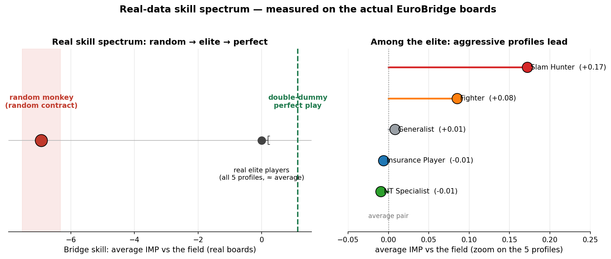

| מגישה: | אנה בן-שושן |
| מרצה הקורס: | ד"ר יורם סגל |
| מנחה הדוקטורט: | ד"ר נצר יעקב זיידנברג |
| קורס: | AI Development Expert |
| מוסד: | TESI — The External Studies Institute |
| תאריך הגשה: | 14 ביוני 2026 |
נתוני משא ומתן בעולם האמיתי הם סודיים ובלתי-מדידים, ולכן כמעט בלתי אפשרי לחקור התנהגות משא ומתן בקנה מידה. NegoPlay משתמש בברידג' תחרותי כמעבדה מדידה לאותן החלטות בדיוק — סיכון, לחץ, והחלפת מידע — ושואל האם סגנון קבלת-ההחלטות של שחקן עובר מהברידג' אל משא ומתן עסקי.
מתוך 149,208 רשומות תחרות (563 שחקנים כשירים), צינור למידה לא-מונחית גילה חמישה פרופילי החלטה מאומתים סטטיסטית (Cohen's d בין 2.1 ל-4.6, כולם p<0.05). כל פרופיל הומר לסוכן מבוסס מודל-שפה שכרטיס-האופי שלו מכיל אך ורק כישורים שנגזרו מהברידג', והסוכנים ניהלו משא ומתן עסקי מול מוכר שכויל על 5,247 משא-ומתנים אמיתיים מ-Craigslist.
העברת ניצחון התבררה כחלשה ורגישה למדד (ρ ≈ +0.2); זיקוק השאלה לצורתה ההתנהגותית המקורית הראה שהסגנון עובר חזק: תוקפנות בברידג' ותוקפנות במשא ומתן מתואמות ב-Spearman ρ = +0.80, מעל יעד ה-0.70 שהוגדר מראש. בקרת פרומפט-הפוך הופכת את המתאם ל--0.90 — הוכחה שההעברה נישאת על-ידי הכישורים שנגזרו מהברידג', ולא על-ידי תוויות. מדד הברידג' עצמו אומת באמצעות מבחן בסיס-אקראי ("קוף") ומעריך double-dummy. המערכת ניתנת לשחזור מלא: נקודת כניסה אחת (SDK), 100+ בדיקות יחידה, סימולציות עם seed קבוע, ותיעוד עלות לכל קריאה (סך הוצאות LLM ≈ 1.70$).
ברצוני להודות לאנשים שליוו את הפרויקט הזה מרעיון למערכת עובדת.
ד"ר יורם סגל — על מסגרת הפרויקט ההנדסית שעיצבה את העבודה: משמעת ה-SDK האחיד, הדרישה לתוצרים מדידים, והסטנדרט שגם אב-טיפוס מחקרי צריך להיות תוכנה בנויה היטב.
ד"ר נצר יעקב זיידנברג — מנחה הדוקטורט שלי, על מומחיות בתחום הברידג' — מתיקוני גודל-מדגם בגילוי הפרופילים ועד עוגן ה-double-dummy שביסס את מדד המיומנות — ועל הליווי האקדמי שבתוכו הפרויקט הזה משמש בסיס אמפירי.
ד"ר רמי — על הנחיה מתודולוגית חדה: הדרישה לקווי-בסיס, ביקורות עיבוד-מקדים ויושרה סטטיסטית דחפה את הפרויקט לאמת כל מספר שהוא מדווח — כולל מבחן הבסיס-האקראי ששינה את מדד הברידג'.
ולבסוף — למשפחתי, על הסבלנות בלילות של ריצות סימולציה, ועל שהעמידו פנים שהכפלות-עונשין זה נושא מרתק.
| 1. סקירת הפרויקט — הבעיה, הרעיון, הצינור, הנתונים |
| 2. תוצאות מרכזיות — מדד אמין (קוף + double-dummy) · הגילוי: סגנון עובר, ניצחון לא · בקרת האנטי-טאוטולוגיה · מגבלות |
| 3. שכבת ה-AI: סוכני LLM והנדסת כישורים — ארכיטקטורת סוכן · חילוץ כישורים · פרומפטים כקונפיגורציה · אי-דטרמיניזם · לקוח LLM ניטרלי-ספק |
| 4. הנדסת תוכנה — ארכיטקטורת SDK · תבניות עיצוב · בדיקות · הנדסת אמינות · שחזוריות · איכות קוד ועלות |
| 5. מסקנות והמשך |
| חלקים II–III (דו"ח מכין מלא, 51 עמ' + תוכנית עסקית, 20 עמ') — בתיק האנגלי: final_portfolio.pdf |
משא ומתן עסקי הוא אחת המיומנויות המשפיעות ביותר בתעשייה — אך כמעט בלתי אפשרי לחקור אותו כמותית: תמלילים חסויים, תוצאות לא מתוקננות, ואין שום מאגר ציבורי שמקשר בין סגנון ההחלטה של אדם להתנהגותו במשא ומתן. ברידג' תחרותי פותח דרך עוקפת: כל חלוקה היא רצף החלטות מתועדות תחת אי-ודאות — כמה גבוה להתחייב, מתי להסתכן, מתי להילחם — ולכל החלטה תוצאה מדידה. NegoPlay מתייחס לברידג' כמעבדה התנהגותית: לגלות פרופילי קבלת-החלטות בנתוני ברידג', לגלם אותם בסוכני LLM, ולבדוק אם הסגנון שהם מקודדים עובר לתחום אסטרטגי אחר.
מדד מיומנות חייב לדרג סוכן אקראי במקום האחרון. המדד הגס הראשון שלנו נכשל במבחן — "קוף" שמכריז אקראית עקף את כל פרופילי המומחים (0.54 מול 0.25–0.51). ניקוד מחדש של כל חוזה לפי השאלה האם הוא באמת מצליח בהערכת double-dummy (משחק מושלם) הפיל את הקוף למקום האחרון (0.10):
את מיומנות הברידג' מדדנו אז מהתוצאות התחרותיות האמיתיות (IMP מול השדה בשיטת duplicate, כולל הגנה). על הסולם הזה הקוף האקראי יושב על -7 IMP ללוח, פרופילי העילית מתקבצים סביב 0, ומשחק מושלם מסמן את התקרה ב-+1.1:

מתאם של ניצחון בין התחומים התברר כחלש ורגיש למדד (ρ ≈ +0.2 עד +0.5), כי האם סגנון מנצח תלוי ביריב ובחוקי התגמול. זיקוק השאלה לצורתה ההתנהגותית המקורית — האם פרופיל תוקפני בברידג' מתמקח בתוקפנות? — נותן Spearman ρ = +0.80:

כדי לשלול את הטענה "הסוכן תוקפני כי תייגתם אותו תוקפני", כל פרופיל שמר על זהותו אך קיבל את כישורי הברידג' של הפרופיל ההפוך. המתאם התהפך מ-+0.80 ל--0.90 (p=0.037) — ההתנהגות עוקבת אחרי הכישורים המוזרקים שנגזרו מהברידג', לא אחרי התווית:

עם n=5 פרופילים, מתאם הסגנון הוא אינדיקציה (p≈0.10) ולא מובהקות; המשא ומתן מדומה (מכויל על משא-ומתנים אנושיים אמיתיים, אך אין נתוני מו"מ של אותם אנשים); ופרופיל "צייד הסלאמים", שמוגדר לפי הכרזת סלאמים, עשוי לשקף חלקית עוצמת-משחק כללית. הכל מתועד, לא מוסתר.
כל הסוכנים יורשים ממחלקה אבסטרקטית BaseAgent שמחזיקה את חתימת הפרופיל,
את לקוח ה-LLM, ונקודת-חנק החלטה אחת. אף סוכן לא קורא ל-SDK של ספק
ישירות — כל החלטה זורמת דרך מתודה אחת, שמרכזת ניסיונות-חוזרים, פירוק JSON, מדיניות
טמפרטורה ותיעוד עלות:
שני סוכנים קונקרטיים מממשים את התחומים: BridgeAgent.make_bid()
(טמפרטורה 0 לשחזוריות; כל הכרזה מאומתת בבודק-חוקיות מקומי ללא LLM, עם נפילה ל-Pass
אם אינה חוקית) ו-NegotiationAgent.respond_to_offer() (טמפרטורה 0.7;
מחזיר counter/accept/walk_away עם מחיר חסום לטווח החוקי של התרחיש).
שלב 2 הופך ידיים גולמיות לפרופיל כישורים: הידיים נחתכות לחבילות (20–30
לקריאה), נשלחות עם סכמת JSON קשיחה (response_mime_type="application/json"),
ומאוחדות בין החבילות. הכלל ההנדסי המרכזי: לסוכנים לעולם לא נותנים
שמות-תואר של אישיות. בכרטיס של ה"לוחם" כתוב "מכפיל יריבים בקצב של פי 6–8
מהממוצע" — עובדה שחולצה מהמכרזים האמיתיים של שחקניו — ולא "תהיה תוקפני".
כל התנהגות חוצת-תחומים חייבת אפוא לצמוח מכישורי הברידג'. בקרת הפרומפט-ההפוך
(פרק 2) היא המבחן הביצועי של הכלל: החלפת הכישורים מחליפה את ההתנהגות
(ρ: +0.80 ← -0.90).
הפרומפטים הם ארטיפקטים מבוקרי-קוד, לא מחרוזות אד-הוק: ספרייה מרכזית
(shared/prompts.py) בונה כל כרטיס-אופי מאותה תבנית — שורת זהות, 5–7
כישורים שחולצו, חוקי התחום, סכמת פלט קשיחה ודוגמת few-shot. טמפרטורה, סכמה וספק הם
פרמטרים — כך שניסוי הוא שינוי קונפיגורציה, לא שכתוב.
מודלי שפה אינם דטרמיניסטיים אפילו בטמפרטורה 0 (ריצה מקבילית על GPU). לכן השחזוריות מטופלת ברמת המדגם: כל (פרופיל, חלוקה) רץ שלוש פעמים עם הכרעת-רוב; כל תשובה גולמית נשמרת ל-JSONL לפני כל עיבוד; וכל הניתוחים ניתנים לחישוב-מחדש מהקבצים השמורים ללא קריאות API חדשות. החלוקות עצמן נוצרות ממחולל עם seed קבוע, כך שכל הניסוי משוחזר ביט-אחר-ביט עד גבול ה-LLM.
LLMClient אחד עוטף את Gemini (ברירת מחדל), Claude ו-OpenAI מאחורי ממשק
אחיד (תבנית Adapter). הוא מממש ניסיונות-חוזרים עם השהיה מעריכית, timeout של 60 שניות
לכל בקשה (סוקט תקוע עצר פעם אצווה של 1,500 קריאות — ה-timeout הופך תקיעות לכשלים
ניתנים-לניסיון-חוזר), ויומן עלויות JSONL לכל קריאה (ספק, מודל, טוקנים, השהיה, דולר).
סך הוצאות ה-LLM של הפרויקט: ≈ 1.70$.
בסיס הקוד נשמע למשמעת facade קפדנית: כל פעולה ציבורית נגישה דרך
src/sdk.py, ואף פונקציה לא חיה רק במחברת או בסקריפט. המודולים מאורגנים
לפי שלבי הצינור:
תבניות עיצוב בשימוש פעיל: Facade (sdk.py),
Template Method (BaseAgent._decide()),
Adapter (לקוח ה-LLM הניטרלי), ו-Strategy
(סוכני פרופיל מתחלפים — כולל סוכן ה"קוף", שמותאם-ממשק כך שהוא נכנס לכל runner ללא
שינוי קוד).
הפרויקט כולל 100+ בדיקות pytest: יחידות לוגיקה טהורה (יצירת חלוקות,
ניקוד, חוקיות מכרז — 28 בדיקות למנוע הברידג' לבדו), סוכן הבסיס-האקראי (חוקיות כל
הכרזה אקראית, שחזוריות תחת seed קבוע), מעריך ה-double-dummy (קיבועים ידועים: חלוקת
12 לקיחות חייבת לתת 6NT=1.0 ו-7NT=0.0), והשכבות תלויות-ה-LLM נבדקות באמצעות
הזרקת לקוח מדומה (mock) — בלי רשת, בלי מפתח API, בלי עלות:
ריצות הסימולציה הארוכות מהונדסות לשרוד את מצבי-הכשל שנצפו בפועל במהלך הפרויקט:
timeout לכל בקשת HTTP (תקיעה ← ניסיון חוזר), ניסיון-חוזר אטומי לכל לוח עם
השהיות (גולש מעל עומסי 503 של הספק בלי לאבד את האצווה), ושמירת JSONL מצטברת עם
flush() אחרי כל לוח — ריצה שנהרגה שומרת את כל העבודה שהושלמה, וההתקדמות
נצפית ממערכת הקבצים.
זרעים קבועים (random_state=42) בכל scikit-learn ובמחולל החלוקות; נתוני
הגלם בלתי-ניתנים-לשינוי (data/raw לקריאה בלבד); כל מספר נגזר ניתן למעקב עד
ארטיפקט שמור; וההיסטוריה המלאה ב-Git תחת משמעת conventional-commits. כל איור בתיק הזה
נוצר על-ידי סקריפט שב-Git — שום דבר לא צויר ביד, כך שהתיעוד לא יכול לסטות מהנתונים.
סגנון וטיפוסים נאכפים עם ruff, רמזי-טיפוס ותיעוד בסגנון Google בכל
הפונקציות הציבוריות. עלות LLM מנוהלת כתקציב הנדסי: בחירת המודל אמפירית
(gemini-2.5-flash-lite נמצא מהיר פי 10 מברירת המחדל לעומס הזה), כל קריאה
נמדדת, והפרויקט כולו — כולל כל הריצות החוזרות — עלה ≈ 1.70$.
final_portfolio.pdf (87 עמ', אנגלית): עמודי הפתיחה לפי
ההנחיות, דו"ח הסיכום (המקביל למסמך זה), הדו"ח המכין המלא (51 עמ') והתוכנית העסקית
(20 עמ'). המסמך הנוכחי הוא הגרסה העברית של דו"ח הסיכום — לקריאה ולמעבר נוח.